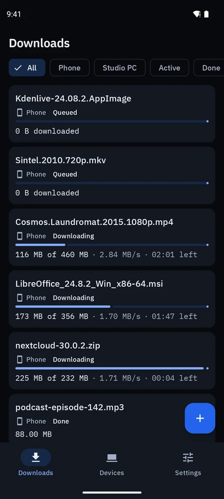
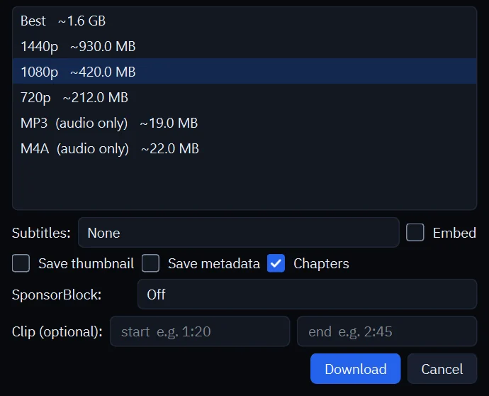
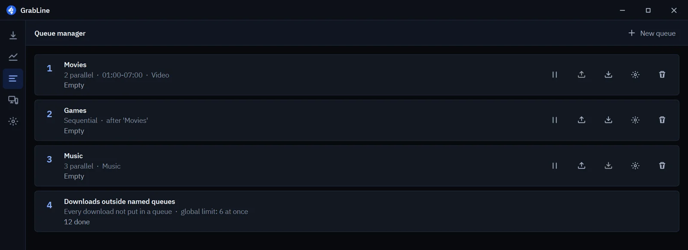

GrabLine
Fast, free downloads on your PC and your Android phone.
Windows, macOS, Linux and Android. Release notes


One app for files, video, torrents and servers
Big files, fast
- Every file is split across up to 32 connections. A dropped connection or a restart picks up exactly where it left off.
Video and audio
- Paste a link from more than 1000 sites and choose the quality, or keep only the audio as MP3, M4A or FLAC.
Torrents
- Magnets, torrent files, RSS feeds and watch folders. Pick the files you want and stop seeding at the ratio you set.
Servers and shared links
- SFTP, FTP, WebDAV and S3, plus Google Drive and Dropbox links. Saved passwords live in your system keychain.

Choose the quality before it downloads
GrabLine reads the page and lists every format it offers, with the size of each. Pick 4K or 720p, add subtitles, keep the chapters, skip sponsor segments, or save only the part between two timestamps.
Powered by yt-dlp and FFmpeg, which GrabLine fetches the first time a video needs them.

Queues that run themselves
Sort downloads into named queues. Each one has its own limit, can run only at night, can wait for another to finish, and picks up new files of its type on its own.
Add a speed limit for the whole app, one download or one website, and an action for when a queue is done.
And the rest of the toolbox
Finding and adding
- Paste or drop links, or import a whole list
- Collect every image or link on a page
- Inspect a page for hidden video streams
- Watch the clipboard for copied links
Keeping things tidy
- Folders by category, renaming rules and tags
- Search, notes and duplicate finder
- Unpack archives when done (RAR and 7z with 7-Zip)
- Export and import your history
Staying safe
- Check SHA-256 and other checksums
- Optional antivirus or VirusTotal check
- HTTP and SOCKS proxies for files and torrents
- A live dashboard for speed, disk and network
Fitting your desktop
- Light or dark theme with your accent colour
- Tray icon, notifications and shortcuts
- Run a command or shut down when finished
- 14 languages, including Arabic and Urdu
Start it on your phone. Let the PC do the work.
Share a link from any app to GrabLine and choose this phone or your PC. Big files go to the PC at home while you watch the progress, pause or retry from the sofa.
- A full download manager on its own: files, video, torrents and servers
- Copy a finished file from the PC to the phone, checked with SHA-256
- Opens file links from other apps, and has a widget and a quick tile
- Pair a second PC and send downloads between computers too
Pairing takes one QR code and stays on your Wi-Fi, encrypted, with no account or cloud server in between.


A download button on every video
GrabLine Connect puts a small button on the videos, audio and links you come across, and its popup lists every file it found in the tab. One click sends it to GrabLine with the right quality and cookies.
- Works in Firefox, Chrome, Edge and Brave
- Can take over your browser's own downloads
- Shows progress right on the page, if you like
- Talks only to GrabLine on your computer, never to a server
Download
Version 1.33.1 for desktop. Everything is included, so there is nothing else to install.
-
WindowsThis deviceWindows 10 or 11, 64-bitInstaller and portable zip
-
macOSThis deviceApple Silicon (M1 and later)Disk image
-
LinuxThis devicex86-64, Ubuntu 22.04 or newerAppImage, DEB or tar.gz
-
AndroidThis deviceAndroid 8 or laterAPK for your phone
-
FirefoxWith the desktop appGrabLine Connect on Firefox Add-ons
-
Chrome, Edge, BraveWith the desktop appOpen Browser Setup in GrabLine and follow the steps.
The desktop apps are not code signed yet, so your system asks once. On Windows choose More info, then Run anyway. On macOS, right click GrabLine and choose Open. The first time you pair a phone, Windows asks about the firewall: choose Allow. Install guide
What GrabLine does not do
No ads, no account, no tracking. Nothing about how you use it leaves your devices. Privacy policy
No internet access to your PC. Paired devices only talk over your own network, and nothing opens a port on your router.
No DRM removal. Netflix, Disney+, Spotify and similar services are not supported.
No price. It is open source under AGPL 3.0 and built in spare time. If it helps you, buy me a coffee.
Questions
Do I need the PC app to use the phone app?
No. The Android app downloads on its own. Pairing it with a PC adds sending links between them and watching the PC's downloads.
How do I pair my phone with my PC?
Connect both to the same Wi-Fi. In GrabLine on the PC, open Devices and click Pair a phone or PC, then scan the code in the Android app. If the camera does not work, tap Enter the code by hand.
Is there an iPhone app?
Not at the moment.
Where is the source code?
On GitHub: the desktop app and extension, and the Android app.